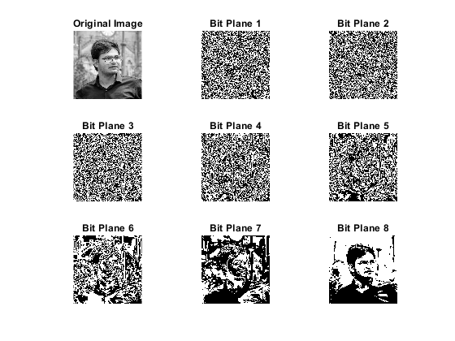

clc
close all;
clear all;
image = imread('poseinmumbai.jpg');
if size(image, 3) == 3
image = rgb2gray(image);
end
[rows, cols] = size(image);
bit_planes = cell(1, 8);
for bit = 1:8
bit_planes{bit} = bitget(image, bit);
end
figure;
subplot(3, 3, 1);
imshow(image, []);
title('Original Image');
for bit = 1:8
subplot(3, 3, bit + 1);
imshow(logical(bit_planes{bit}));
title(['Bit Plane ', num2str(bit)]);
end
for bit = 1:8
filename = sprintf('pose_plane_%d.png', bit);
imwrite(logical(bit_planes{bit}), filename);
end
